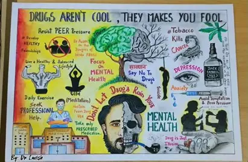

WEEK 6: DRUG AND SUBSTANCE ABUSE
6.1 Meaning and Uses of Drugs
A drug is any chemical substance that changes the way the body or mind works, when taken into the body.
Medicines are drugs used to treat, cure or prevent diseases.
Uses of drugs:
- To cure diseases (e.g. antibiotics for infections, antimalarials for malaria).
- To prevent diseases (vaccines).
- To relieve pain (painkillers like paracetamol).
- To reduce fever.
- To treat wounds and infections (antiseptics).
- To help in surgery (anaesthetics).
- To control long-term diseases (e.g. for diabetes and high blood pressure).
Rules for the proper use of drugs:
- Take drugs only when prescribed by a doctor, nurse or pharmacist.
- Follow the correct dose and time.
- Complete the full course of treatment.
- Check the expiry date.
- Store drugs in a cool, dry place, out of children's reach.
- Never share drugs with others.
- Buy drugs only from a registered pharmacy.
Drug Abuse and Substance Abuse
Drug abuse is the use of a drug without medical need, or the use of a drug in a way or amount other than prescribed.
Substance abuse is the wrong or harmful use of any substance (including alcohol, tobacco, solvents and illegal drugs) that changes the way the body or mind works.
Examples of abused drugs and substances:
| Group | Examples |
|---|---|
| Stimulants | Cocaine, caffeine in excess, amphetamines |
| Depressants | Alcohol, sleeping pills (e.g. diazepam), codeine |
| Narcotics (opioids) | Heroin, morphine, tramadol misuse |
| Hallucinogens | Marijuana (Indian hemp), LSD |
| Tobacco products | Cigarettes, snuff |
| Inhalants | Petrol, glue, paint thinner |
| Other | Over-the-counter drugs taken wrongly |
Reasons why young people should not abuse drugs:
- Peer pressure.
- Curiosity and desire to experiment.
- Ignorance of the dangers.
- Stress, depression and frustration.
- Broken homes and lack of parental care.
- Poverty and unemployment.
- Easy availability of drugs.
- Wrong belief that drugs give strength or courage.
- Wrong or self-medication.
Signs of drug abuse:
- Red eyes, drowsiness or poor appetite.
- Sudden change in behaviour and mood.
- Poor performance in school and truancy.
- Keeping bad friends and secrecy.
- Neglect of personal hygiene.
- Stealing or lying to get money.
6.3 Effects of Drug Abuse
On the person's health:
- Damage to the brain, liver, lungs, kidneys and heart.
- Addiction (the person cannot stop using the drug).
- Weak immune system, leading to frequent sickness.
- Mental illness and madness.
- Spread of diseases like HIV/AIDS through sharing of needles.
- Overdose, coma and even death.
On the person's behaviour and education:
- Poor performance in school and dropping out.
- Violence, aggression and rudeness.
- Loss of self-control and respect.
On the family and society:
- Crime, armed robbery, cultism, rape and violence.
- Poverty and spending of family money.
- Road and workplace accidents.
- Broken homes.
- Loss of future leaders and workforce.
- Wasted government resources.
How to prevent drug abuse:
- Say "NO" firmly to drugs.
- Choose good friends.
- Parents should guide and monitor children.
- Teach drug education in schools.
- Take part in sports and positive hobbies.
- Seek help early from a counsellor, teacher, doctor or parent.
- Enforce laws against the sale of illegal drugs (in Nigeria the NDLEA – National Drug Law Enforcement Agency – fights drug trafficking and abuse).
Treatment: Drug addicts can be treated through counselling, rehabilitation centres and medical care. They should be treated with care and support, not rejection.
